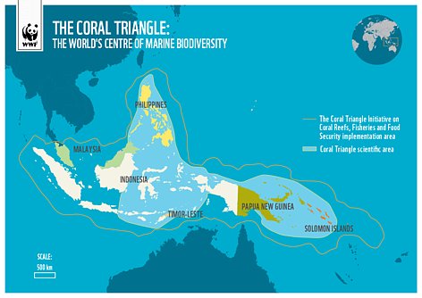

Coral Triangle
The Coral Triangle is a marine area located in the western Pacific Ocean. It includes the waters of Indonesia, Malaysia, the Philippines, Papua New Guinea, Timor Leste and Solomon Islands. Named for its staggering number of corals (nearly 600 different species of reef-building corals alone), the region nurtures six of the world’s seven marine turtle species and more than 2000 species of reef fish. The Coral Triangle also supports large populations of commercially important tuna, fueling a multi-billion dollar global tuna industry. Over 120 million people live in the Coral Triangle and rely on its coral reefs for food, income and protection from storms.
WWF ProjectsMonitoring Coral Reef Health in Indonesia
|
 |
|---|